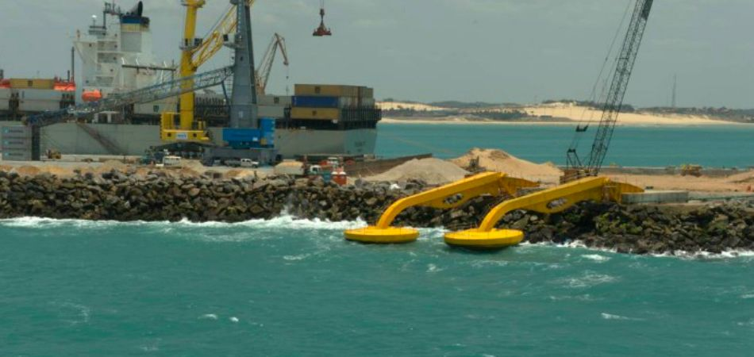
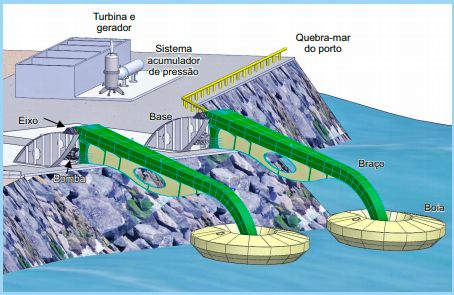
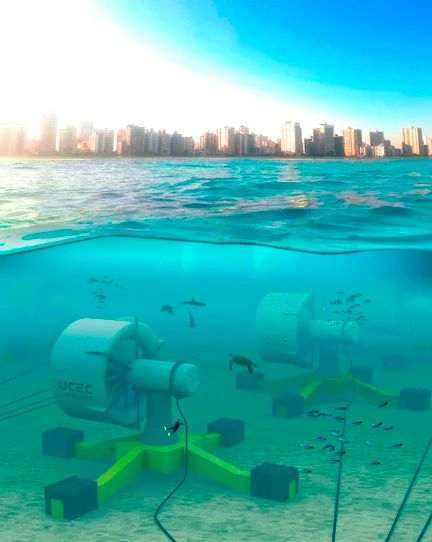
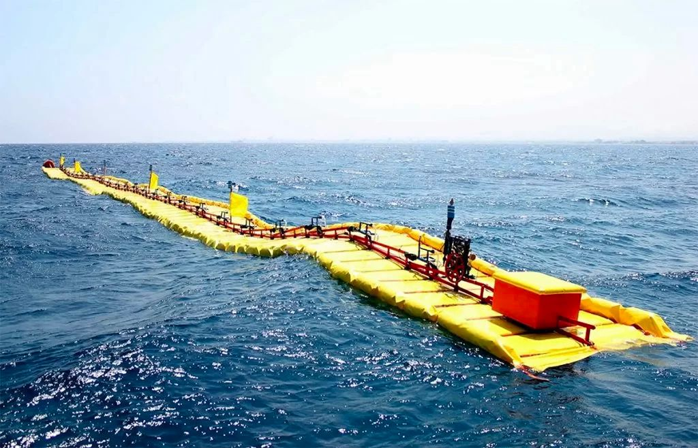

Energia Oceânica

Usina em Porto de Pecém, Ceará.
Energia Oceânica. Imagine que as ondas do mar não são apenas para surfar, ou que as correntes marítimas não estão ali somente para seguir seu fluxo.
Mas também que tudo isso pode se tornar energia limpa e renovável, transformadas através do poder dos mares e oceanos.
Também chamada energia maremotriz, é considerada renovável e limpa pois sua fonte nunca se esgota, sua produção e aproveitamento causa pouco impacto ambiental.
A energia maremotriz é gerada pela transformação da energia cinética das águas do mar, causada pelas variações no nível do mar devido às marés.
As marés são um fenômeno oceânico resultante da mudança no nível das águas, influenciado pela força gravitacional da Lua e, em menor influência, pelo Sol.
Quando esses astros estão alinhados com a Terra, o efeito gravitacional é mais forte, o que provoca marés mais intensas. A energia maremotriz pode ser produzida por diferentes formas,
capturando-a através das ondas e correntezas. Essa energia pode ser captada através de boias flutuantes, que se movem conforme as ondas sobem e descem; serpentinas, que são dispositivos longos e flexíveis que movem-se com o balancear das ondas;
baías que armazenam água na maré alta e depois liberam através das turbinas que captam a energia gerada pelo seu movimento.

sistema de usina com boias.
Vantagens e Desvantagens
Sua principal vantagem é o fato de ser produzida por meio de uma fonte limpa e renovável.
Com baixíssimo impacto ambiental, principalmente em questões relacionadas à poluição direta da água ou ar.
É uma ótima alternativa para países cujas condições fisícas não favorecem determinadas usinas (ex: eólicas ou hidrelétricas).
No entanto, os custos de construção e instalação são muito elevados. As turbinas e hélices são os de maior valor, devido sua robustez e materiais utilizados.
Outra problemática é a área, pois necessitam de condições adequadas, como o desnível da maré, que dever ser de no mínimo 7 metros, e a velocidade média das marés 2m/s.
E mesmo com o baixo impacto ambiental, há ainda o risco dos animais se chocarem contra as estruturas.
A Energia Oceânica no Brasil e no Mundo
Apesar dos desafios e limitações, o futuro da Energia Oceânica é promissor.
Com o avanço da tecnologia e a crescente demanda por fontes de energia limpas e renováveis, ela está ganhando cada vez mais espaço no setor energético.
Muitos países já estão investindo em projetos de Energia Oceânica e acreditam que essa fonte de energia pode ser uma alternativa viável para reduzir a
dependência de combustíveis fósseis e combater as mudanças climáticas.
Existem diversos exemplos de projetos deste tipo de geração de energia no Brasil e no mundo.
Em 1967, a França foi pioneira na geração de energia a partir das marés, com a inauguração da usina de La Rance, que tinha capacidade de 240 MW.
Atualmente, a maior usina maremotriz do mundo é a de Sihwa, na Coréia do Sul, com potência de 260 MW.
Além disso, há projetos mais modernos e eficazes em Gibraltar e em Israel. A tecnologia da maremotriz é uma fonte de energia limpa e renovável,
contribuindo para a sustentabilidade do planeta.
Exemplos de Usinas

Turbinas Subaquáticas.
Porto de Pecém.
Localização: Ceará, Brasil.
Capacidade: Geração de até 100kW de energia.
Utiliza sistema de bóias flutuantes, que coverte o movimento das ondas em eletricidade.
Projeto Meygen, Escócia.
Localização: Oceano Atlântico.
Capciadade: Até 398MW, com 269 turbinas submersas.
Geração de energia apartir dos movimentos das marés.
Baía de Fundy.
Localização: Nova Scotia e New Brunswick, Canadá.
Capacidade: Até 20MW de energia.
Conhecida pelas marés mais poderosas do mundo, ideal para geração de energia maremotriz.
Sea Wave Energy Limited.
Localização: Reino Unido.
Capciadade: potencial para gerar até 100MW.
Inovação. Desenvolvimento de uma plataforma de energia das ondas simples, leve e modular.

Usina Plataforma "Sea Wave", Reino Unido.